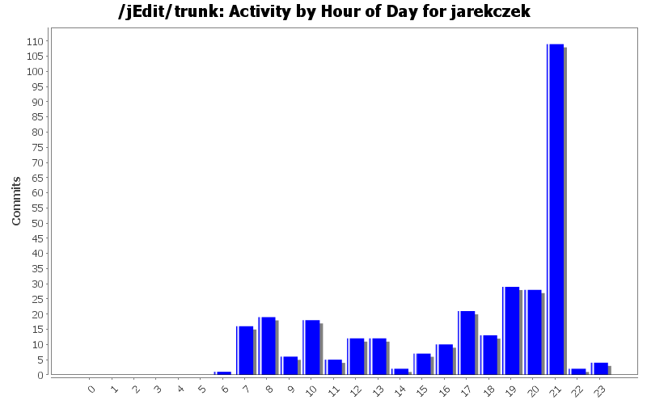
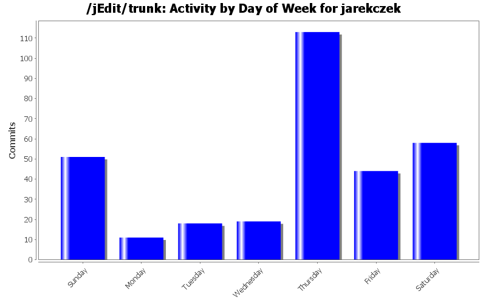
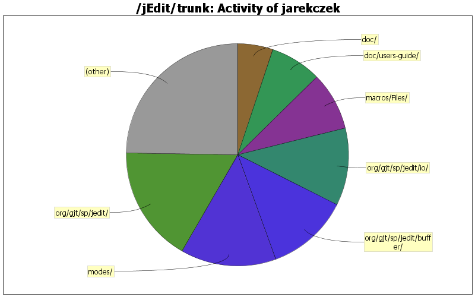

| Directory | Changes | Lines of Code | Lines per Change |
|---|---|---|---|
| Totals | 314 (100.0%) | 2820 (100.0%) | 8.9 |
| org/gjt/sp/jedit/ | 31 (9.9%) | 478 (17.0%) | 15.4 |
| modes/ | 10 (3.2%) | 391 (13.9%) | 39.1 |
| org/gjt/sp/jedit/buffer/ | 20 (6.4%) | 340 (12.1%) | 17.0 |
| org/gjt/sp/jedit/io/ | 16 (5.1%) | 317 (11.2%) | 19.8 |
| macros/Files/ | 6 (1.9%) | 240 (8.5%) | 40.0 |
| doc/users-guide/ | 20 (6.4%) | 210 (7.4%) | 10.5 |
| doc/ | 44 (14.0%) | 146 (5.2%) | 3.3 |
| org/gjt/sp/util/ | 14 (4.5%) | 130 (4.6%) | 9.2 |
| misc/debug/ | 4 (1.3%) | 124 (4.4%) | 31.0 |
| org/gjt/sp/jedit/indent/ | 12 (3.8%) | 96 (3.4%) | 8.0 |
| org/gjt/sp/jedit/gui/ | 23 (7.3%) | 92 (3.3%) | 4.0 |
| misc/indentation_problems/ | 8 (2.5%) | 73 (2.6%) | 9.1 |
| org/gjt/sp/jedit/options/ | 7 (2.2%) | 37 (1.3%) | 5.2 |
| org/gjt/sp/jedit/textarea/ | 22 (7.0%) | 36 (1.3%) | 1.6 |
| org/gjt/sp/jedit/browser/ | 7 (2.2%) | 33 (1.2%) | 4.7 |
| org/gjt/sp/jedit/search/ | 7 (2.2%) | 24 (0.9%) | 3.4 |
| org/gjt/sp/jedit/bufferio/ | 2 (0.6%) | 21 (0.7%) | 10.5 |
| org/jedit/localization/ | 15 (4.8%) | 16 (0.6%) | 1.0 |
| org/gjt/sp/jedit/pluginmgr/ | 2 (0.6%) | 9 (0.3%) | 4.5 |
| org/gjt/sp/jedit/menu/ | 2 (0.6%) | 2 (0.1%) | 1.0 |
| misc/ | 1 (0.3%) | 2 (0.1%) | 2.0 |
| / | 1 (0.3%) | 2 (0.1%) | 2.0 |
| org/gjt/sp/jedit/syntax/ | 1 (0.3%) | 1 (0.0%) | 1.0 |
| org/jedit/options/ | 5 (1.6%) | 0 (0.0%) | 0.0 |
| org/jedit/migration/ | 1 (0.3%) | 0 (0.0%) | 0.0 |
| org/jedit/keymap/ | 5 (1.6%) | 0 (0.0%) | 0.0 |
| org/jedit/core/ | 2 (0.6%) | 0 (0.0%) | 0.0 |
| org/gjt/sp/jedit/gui/tray/ | 4 (1.3%) | 0 (0.0%) | 0.0 |
| org/gjt/sp/jedit/gui/statusbar/ | 5 (1.6%) | 0 (0.0%) | 0.0 |
| org/gjt/sp/jedit/datatransfer/ | 9 (2.9%) | 0 (0.0%) | 0.0 |
| org/gjt/sp/jedit/bufferset/ | 4 (1.3%) | 0 (0.0%) | 0.0 |
| keymaps/ | 4 (1.3%) | 0 (0.0%) | 0.0 |

Fixed #3579788, not doing backups on windows when no backup directory given
62 lines of code changed in 2 files:
Fixed #3574500, I/O error on first save attempt (when backup settings
incorrect).
42 lines of code changed in 4 files:
Added macro: Open Selection In Desktop (File section)
119 lines of code changed in 3 files:
Open Selection macro: fixed missing comment slash
1 lines of code changed in 1 file:
Open Selection macro: explicit folds
10 lines of code changed in 1 file:
Open_Selection macro: the path under caret is used in case of no selection.
77 lines of code changed in 2 files:
Fixed $Plugins appearing in VFS browser context menu, now mnemonic is assigned
1 lines of code changed in 1 file:
Fixed threading api comments (#3563789 Jarek Czekalski)
9 lines of code changed in 2 files:
New api VFSBrowser.getLastVisitedPath() that may be handy for use in macros.
20 lines of code changed in 3 files:
Open_Selection macro: Added possibility to join current browser directory
and highlighted path to obtain a valid filename and open it.
Attention was paid to extend the functionality without changing current
behaviour.
53 lines of code changed in 3 files:
patch mode: recognize typical mercurial and git headers
2 lines of code changed in 1 file:
Undo restores selection state in simple cases (deletions, replaces
on simple range selections). (patch #1570553 Maik Nijhuis, Thomas Meyer,
Jarek Czekalski)
90 lines of code changed in 3 files:
New debugging option "Beep on output", request #3551931.
70 lines of code changed in 7 files:
Tom Power fixed problems with his patch #3530786 - new option appearing
in all context menu option panes, for example in VFS Browser.
21 lines of code changed in 2 files:
Optimized reading elasticTabstops property in TextArea
(patch #3533830 Thomas Meyer) plus my comments on
JEditBuffer.elasticTabstopsOn field.
7 lines of code changed in 2 files:
javadoc for Log: details about standard output interception
8 lines of code changed in 1 file:
Set svn:eol-style to native in .java and .props files, which had not this
flag set, probably due to forgetting
0 lines of code changed in 88 files:
Simplified SearchDialog and DirectoryListSet code as discussed
in patch #3549670 by Eric Le Lay. Shortly speaking:
- SearchAndReplace.setSearchFileSet(fileset) sends the edit bus message
so the one here was redundant
- skip... members of DirectoryListSet were actually used only in one
function body, so it's more logical for them to be local variables
7 lines of code changed in 2 files:
Created a setting allowing to suppress synchronizing filter in search dialog.
Some users prefer to have a constant filter and
they would like to synchronize only the directory. These users should
set search.dontSyncFilter to true. I introduced it as a hidden setting
(no gui), but I hope there will be an agreement for the gui also.
11 lines of code changed in 3 files:
Fixed bug #1646584, filter not synchronizing in search dialog when
"All buffers" is selected. (patch #3549905 Eric Le Lay)
12 lines of code changed in 2 files:
(80 more)